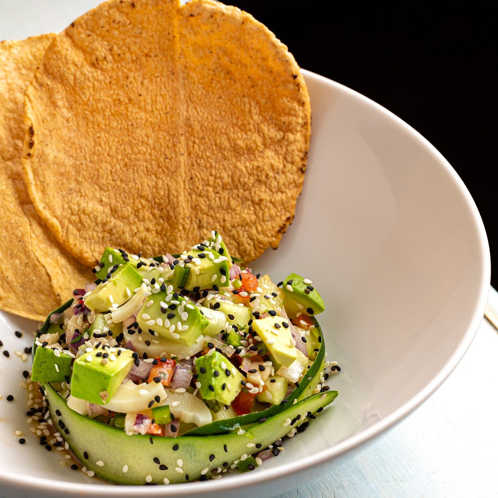

Tucson, Arizona
Mexican food truck flavors in Tucson
A Mexican food truck at 1540 E Broadway Blvd in Tucson serving quesabirria tacos, birria bowls, mini chimichangas, shrimp quesadillas, and caramelos.

Tucson, Arizona
A Mexican food truck at 1540 E Broadway Blvd in Tucson serving quesabirria tacos, birria bowls, mini chimichangas, shrimp quesadillas, and caramelos.
3 Margaritas Kitchen is a Mexican food truck at 1540 E Broadway Blvd in Tucson. The menu listed in research includes quesabirria tacos, birria bowls, mini chimichangas, shrimp quesadillas, and caramelos.

